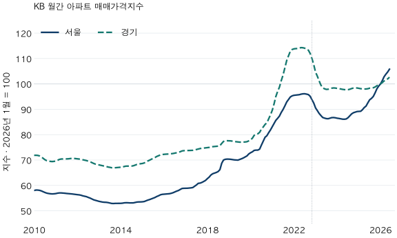

가격의 긴 흐름 · 구간을 세는 기준
서울·경기 아파트 상승장·하락장, 몇 번으로 세야 할까?
2010년1월~2026년6월 KB 월간 아파트 지수로 서울·경기의 연속 상승·하락 구간을 비교합니다. 중립 기준에 따라 횟수가 달라지는 이유와 사이클 해석의 한계를 확인하세요.
분석 기간 · 2010년 1월~2026년 6월 KB 월간 지수 | 보유 자료 스냅샷 생성 · 2026-10-03
“서울 아파트는 몇 번의 상승장을 거쳤다”는 설명을 보면, 어디서 한 번을 끊었는지부터 확인해야 합니다. 2010년 1월~2026년 6월 KB 월간 아파트 매매가격지수에서 오른 달과 내린 달을 각각 연속으로 묶으면 서울·경기 모두 상승 9구간, 하락 8구간입니다. 하지만 이것이 두 지역에 경제적 사이클이 똑같이 9번 있었다는 뜻은 아닙니다.
실거래 평균 대신 어떤 지수를 보았나요?
KB가 공표한 월간 아파트 매매가격지수의 서울·경기 계열을 사용했습니다. 부동산중개업소가 표본주택의 가격을 조사하는 통계이며, 거래가 없는 주택은 비교사례 등을 이용해 조사합니다. 매달 거래된 집의 실거래 평균·중앙값이나 이 블로그의 자체 추정가격과 다릅니다. KB 공식 조사개요에서 조사방법을 확인할 수 있습니다.
각 지역의 2026년 1월을 100으로 맞춘 지수입니다. 한 지역의 지수가 100에서 110으로 오르면 그 기준 대비 10% 상승한 것입니다. 서울 110과 경기 100을 비교해 서울 집값이 10% 비싸다고 해석할 수는 없습니다. 지역별 기준 가격 수준이 다르기 때문입니다.

시작월·연말·최근 분석월의 지수 펼치기
| 관측월 | 서울 | 경기 |
|---|---|---|
| 2010-01 | 58.01 | 71.86 |
| 2010-12 | 56.69 | 69.47 |
| 2011-12 | 56.44 | 70.56 |
| 2012-12 | 53.91 | 68.23 |
| 2013-12 | 52.92 | 67.10 |
| 2014-12 | 53.50 | 68.55 |
| 2015-12 | 56.47 | 72.18 |
| 2016-12 | 58.86 | 73.69 |
| 2017-12 | 61.97 | 74.78 |
| 2018-12 | 70.37 | 77.61 |
| 2019-12 | 72.40 | 77.56 |
| 2020-12 | 81.86 | 87.80 |
| 2021-12 | 95.28 | 113.55 |
| 2022-12 | 92.45 | 107.58 |
| 2023-12 | 86.64 | 98.36 |
| 2024-12 | 89.11 | 98.39 |
| 2025-12 | 99.14 | 99.64 |
| 2026-01 | 100.00 | 100.00 |
| 2026-06 | 105.80 | 102.63 |
표는 차트를 읽기 위한 연말 발췌입니다. 아래 계산은 연말 값이 아니라 전체 198개월의 원 정밀도 지수를 사용했습니다.
이 글의 경기는 KB가 공표한 경기 지역 계열입니다. 앞선 실거래 글의 수집 경기 36개 시·구를 합친 값이 아닙니다. 인천은 이번 두 지역 비교에서 따로 분석하지 않았으므로 이를 수도권 전체의 단일 결과로 부르지 않습니다.
‘상승 한 번’은 어떻게 셌나요?
여기서는 같은 방향의 월간 변화가 끊김 없이 이어진 구간을 한 번으로 셉니다. 공식 상승장·하락장 판정이 아니라, 기준에 따른 차이를 확인하는 단순한 연속 구간 규칙입니다.
- 전월비를 계산합니다. 월간 변화율은
100 × (이번 달 지수 ÷ 전달 지수 − 1)입니다. 2010년 1월은 출발값이므로, 실제 분류 대상은 2010년 2월~2026년 6월의 197개월입니다. - 중립 폭 h를 정합니다. 변화율이 +h%보다 크면 상승, −h%보다 작으면 하락, 그 사이와 경계값은 중립입니다. h=0일 때는 정확히 0인 변화만 중립입니다.
- 같은 상태가 이어지는 최대 구간을 셉니다. 상승·상승은 한 구간이고, 상승·중립·상승은 두 상승 구간입니다. 중립 달을 건너뛰어 연결하지 않습니다.
최소 지속기간이나 누적 상승폭 조건을 추가하지 않았으므로 한 달짜리 구간도 들어갑니다. 이동평균으로 선을 매끈하게 만들거나, 차트를 본 뒤 작은 반전을 지우지도 않았습니다. 큰 사이클을 찾으려면 별도의 정의가 필요합니다.
±0.1%를 중립으로 두면 왜 상승 횟수가 늘까요?
중립 달이 긴 상승 구간을 끊을 수 있기 때문입니다. 아래 표는 같은 자료에 중립 폭만 0%, ±0.1%, ±0.3%로 바꾼 결과입니다.
| 지역 · 중립 폭 | 상승 | 하락 | 중립 |
|---|---|---|---|
| 서울 · ±0% | 9 | 8 | 0 |
| 서울 · ±0.1% | 13 | 6 | 18 |
| 서울 · ±0.3% | 10 | 5 | 15 |
| 경기 · ±0% | 9 | 8 | 0 |
| 경기 · ±0.1% | 16 | 8 | 23 |
| 경기 · ±0.3% | 9 | 3 | 12 |
횟수는 반올림 전 지수로 계산했습니다. ±0.1% 기준에서는 정확히 +0.1%와 −0.1%도 중립입니다. 중립 구간도 끊김 없이 이어진 묶음의 개수입니다.
화면에 반올림해 표시한 변화율이 0.00%여도 원 지수의 변화는 작은 양수나 음수일 수 있습니다. 표시된 두 자리 변동률만 세면 이 표와 결과가 달라질 수 있습니다. 이것도 0% 기준의 구간 수를 큰 상승장·하락장 수로 읽기 어려운 이유입니다.
가상 예시로 세 달의 변화가 +0.20%, +0.05%, +0.20%라면, 부호만 볼 때는 상승이 세 달 연속이어서 한 구간입니다. ±0.1% 기준을 적용하면 가운데 달이 중립이 되어 상승 구간이 두 개가 됩니다. 실제 서울의 9→13, 경기의 9→16도 이런 분할을 포함합니다.
중립 폭을 더 넓힌 ±0.3%에서는 상승 구간이 서울 10개, 경기 9개입니다. 따라서 “더 큰 움직임만 남기면 구간 수도 항상 줄어든다”는 보장은 없습니다. 어느 기준이 정답인지 투표하는 표가 아니라, 횟수가 규칙에 민감하다는 확인입니다.
상승 구간 수가 같으면 오른 기간도 같을까요?
같지 않습니다. 부호만 보면 두 지역 모두 상승 9구간이지만, 상승한 달은 서울 129개월·경기 130개월입니다. 하락한 달은 각각 68개월·67개월입니다. 한 달짜리 구간과 여러 해 이어진 구간을 똑같이 한 번으로 센 결과입니다.
기준별 상승·하락·중립 개월 수 펼치기
| 지역 · 중립 폭 | 상승 | 하락 | 중립 |
|---|---|---|---|
| 서울 · ±0% | 129 | 68 | 0 |
| 서울 · ±0.1% | 110 | 53 | 34 |
| 서울 · ±0.3% | 83 | 22 | 92 |
| 경기 · ±0% | 130 | 67 | 0 |
| 경기 · ±0.1% | 97 | 50 | 50 |
| 경기 · ±0.3% | 53 | 20 | 124 |
부호만 분류한 경우 가장 긴 연속 상승은 서울이 2014년 8월~2018년 12월의 53개월, 경기는 2014년 7월~2018년 12월의 54개월입니다. 각각 시작 직전 달과 마지막 달의 지수를 비교하면 누적 변화는 +32.52%, +14.79%입니다. 비슷한 길이와 같은 구간 수가 같은 상승폭을 뜻하지 않습니다.
아래 두 표는 0% 기준의 모든 구간을 보여 줍니다. 비교 시작은 첫 변화가 일어나기 직전 달입니다. 예를 들어 서울의 위 상승 구간은 2014년 7월 지수에서 2018년 12월 지수까지 비교합니다. 기간 끝의 상승 구간은 이후에도 이어졌는지 이 분석으로 확정하지 않습니다.
서울의 상승·하락 17구간 전체 펼치기
| 비교 시작 → 끝 | 방향 | 개월 | 누적 변화 | 관측 경계 |
|---|---|---|---|---|
| 2010-01 → 2010-02 | 상승 | 1 | +0.27% | 시작 경계 |
| 2010-02 → 2010-11 | 하락 | 9 | -2.61% | — |
| 2010-11 → 2011-04 | 상승 | 5 | +0.68% | — |
| 2011-04 → 2013-09 | 하락 | 29 | -7.31% | — |
| 2013-09 → 2013-11 | 상승 | 2 | +0.10% | — |
| 2013-11 → 2013-12 | 하락 | 1 | -0.00% | — |
| 2013-12 → 2014-04 | 상승 | 4 | +0.48% | — |
| 2014-04 → 2014-07 | 하락 | 3 | -0.14% | — |
| 2014-07 → 2018-12 | 상승 | 53 | +32.52% | — |
| 2018-12 → 2019-06 | 하락 | 6 | -0.57% | — |
| 2019-06 → 2020-04 | 상승 | 10 | +5.63% | — |
| 2020-04 → 2020-05 | 하락 | 1 | -0.00% | — |
| 2020-05 → 2022-07 | 상승 | 26 | +30.04% | — |
| 2022-07 → 2023-08 | 하락 | 13 | -10.23% | — |
| 2023-08 → 2023-11 | 상승 | 3 | +0.53% | — |
| 2023-11 → 2024-05 | 하락 | 6 | -0.76% | — |
| 2024-05 → 2026-06 | 상승 | 25 | +22.91% | 끝 경계 |
경기의 상승·하락 17구간 전체 펼치기
| 비교 시작 → 끝 | 방향 | 개월 | 누적 변화 | 관측 경계 |
|---|---|---|---|---|
| 2010-01 → 2010-02 | 상승 | 1 | +0.02% | 시작 경계 |
| 2010-02 → 2010-11 | 하락 | 9 | -3.45% | — |
| 2010-11 → 2011-06 | 상승 | 7 | +1.52% | — |
| 2011-06 → 2011-07 | 하락 | 1 | -0.02% | — |
| 2011-07 → 2011-10 | 상승 | 3 | +0.32% | — |
| 2011-10 → 2013-09 | 하락 | 23 | -5.38% | — |
| 2013-09 → 2014-05 | 상승 | 8 | +1.13% | — |
| 2014-05 → 2014-06 | 하락 | 1 | -0.01% | — |
| 2014-06 → 2018-12 | 상승 | 54 | +14.79% | — |
| 2018-12 → 2019-07 | 하락 | 7 | -0.72% | — |
| 2019-07 → 2022-05 | 상승 | 34 | +48.34% | — |
| 2022-05 → 2023-07 | 하락 | 14 | -14.40% | — |
| 2023-07 → 2023-11 | 상승 | 4 | +0.58% | — |
| 2023-11 → 2024-06 | 하락 | 7 | -0.73% | — |
| 2024-06 → 2024-11 | 상승 | 5 | +0.74% | — |
| 2024-11 → 2025-04 | 하락 | 5 | -0.43% | — |
| 2025-04 → 2026-06 | 상승 | 14 | +4.73% | 끝 경계 |
이 결과를 ‘상승장은 몇 년마다 온다’로 읽으면 안 되는 이유는 무엇인가요?
가장 중요한 반론은 이 규칙이 경제적 사이클이 아니라 월별 방향의 연속성만 센다는 점입니다. 작은 반전, 중립 기준, 분석 시작·끝을 어떻게 처리하느냐에 따라 횟수는 달라집니다. 16년 반을 상승 구간 수로 나눠 다음 상승장까지의 대기기간을 계산할 근거가 없습니다.
자료 자체의 역사도 확인해야 합니다. KB 월간 지수 화면은 2022년 11월 개편 전후 일부 지표의 변동 가능성을 안내하고, 공식 조사개요는 2026년 표본 재설계·행정구역 반영과 기준시점 변경을 설명합니다. 이번 계산은 보유한 공표 계열을 그대로 사용했으며 개편 영향을 제거한 실험이 아닙니다.
모든 지수값에 같은 양수를 곱해 기준을 100으로 다시 맞추기만 하면 전월비는 변하지 않습니다. 하지만 표본·가중치·원자료 개정까지 바뀌는 일은 단순한 눈금 변경과 다릅니다. 이번 자료는 과거 매달 알 수 있었던 당시 공표본을 복원한 것이 아닙니다.
주간 지수, 다른 기관 지수, 특정 구나 면적의 지수로 바꾸면 결과도 달라질 수 있습니다. 월간 결과를 주간 변동률의 합계와 섞거나, 광역 지수의 전환을 내 단지의 전환일로 옮기지 않습니다. 이 글은 금리·정책이 각 구간을 만들었다는 원인 분석이나 매수·매도 시점 추천을 하지 않습니다.
장기 사이클 설명을 읽을 때 무엇을 확인하면 될까요?
- 어떤 가격인지 묻습니다. 실거래 평균, 조사 지수, 자체 모형인지 확인하고 지역·주택유형·빈티지를 적습니다.
- 한 번의 정의를 확인합니다. 월간 부호인지, 중립 폭·최소 기간·누적폭 조건이 있는지 봅니다. 기준이 없는 횟수는 다른 분석과 비교하기 어렵습니다.
- 횟수 옆에 길이와 폭을 놓습니다. 같은 9구간도 지속기간과 누적 변화가 다릅니다. 시작·끝에 잘린 구간도 확인합니다.
- 내 후보는 별도로 검증합니다. 광역 지수는 배경입니다. 실제 단지의 계약일·면적·거래 근거와 내 자금 조건을 다시 비교합니다.
자료·계산 규칙·검증 범위 펼치기
- 자료: KB 공표 월간 아파트 매매가격지수, 서울·경기 각198개월(2010.1~2026.6), 총396개 지수값입니다. 전용84㎡만의 지수가 아니며 서울·경기 계열을 직접 사용했습니다. 공표 조사 지수이므로 기존 실거래 표의 계약 건수 기준을 적용한 표가 아닙니다.
- 시점: 보유 원천 수집시각2026-10-03 07:34:22 UTC(한국시간16:34:22), 원천 갱신 표기20260914. 분석은2026년6월에서 끝냈습니다. 관측월은 월간 통계의 표지이며 매월1일의 가격이나 발표일을 뜻하지 않습니다. 공식 화면 확인일은2026-10-10입니다.
- 분류: 전월비의 원 정밀도 값으로 h=0,0.1,0.3%를 각각 적용했습니다. +h초과 상승,−h미만 하락,경계 포함 나머지 중립입니다. 같은 상태의 최대 연속 구간을 세며 중립을 건너뛰지 않습니다. 최소 지속기간·최소 누적폭·평활화·계절조정은 추가하지 않았습니다. 이 기준은 KB의 공식 국면 정의가 아닙니다.
- 경계: 첫 달은 비교 출발값이며197개 전월비를 분류합니다. 첫 구간의 실제 시작과 마지막 구간의 실제 끝은 관측 밖에서 확인하지 않았습니다. 누적 변화는100×(구간 끝 지수/첫 변화 직전 달 지수−1)입니다. 통계적 전환점 검정이나 유의확률은 계산하지 않았습니다.
- 검증: 원천 파일의 체크섬·행수·월간/아파트/매매 분류를 확인하고 마트396관측을 원천과 대조했습니다. Python의 연속 구간 계산과 원천을 직접 읽은 별도SQL의6개 기준별 집계가 일치합니다. 날짜 누락·중복·비양수 값은 허용하지 않았습니다. 월별 지수·기준별 집계·전체 구간 JSON에서 계산 범위를 확인할 수 있습니다.
자료: KB부동산. 계산·분석·집필: 파파펭귄 (Nobot Kang). 에이전트로 원천 대조·계산·초안 검토를 보조했습니다. 공식 공표값에 자체 연속 구간 규칙을 적용한 결과이며 KB가 발표한 사이클 횟수가 아닙니다.